In this blog post, I'll walk through my approach to solving the Acrobot problem using Q-Learning. Q-Learning is best suited for discrete state spaces, meaning it does not directly handle continuous observations. Because of this, applying Q-Learning to this environment requires modifying or approximating the state space into a discrete form.
Before getting into how I handled that, let's first take a quick look at the problem itself, along with its observation and action spaces.
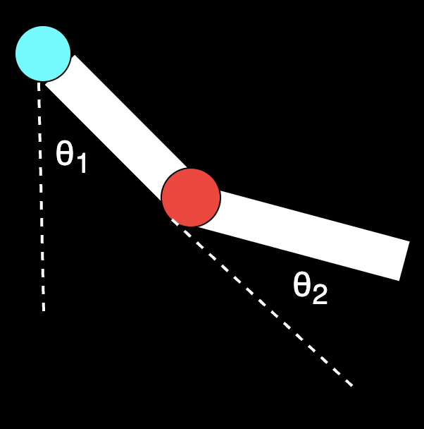
θ (theta) representation for the system.
The Acrobot is essentially a 2-link pendulum, where only the second joint (red one) is actuated. The objective is to swing the system such that the tip of the second link reaches (or exceeds) a target height. In our problem the height condition should satisfy -cos(θ1) -cos(θ1 + θ2) > 1 .
The angles θ1 and θ2 represent the relative orientations of the two links, as shown in the figure. Instead of directly observing these angles, the environment provides sin(θ1), cos(θ1), sin(θ2), and cos(θ2). These four values uniquely encode the angular positions while avoiding discontinuities.
In addition to this, we also observe the angular velocities of both joints. Altogether, this gives us a 6-dimensional observation vector, which fully describes the state of the system at any given time.
The action space in this environment is discrete, consisting of three possible actions applied to the actuated joint (highlighted in red):
Apply negative torque (0)
Apply no torque (1)
Apply positive torque (2)
Now that we've clearly discussed the problem state-action values and gotten that out of the way, let's dive back into my solution. In this attempt at discretization, I've chosen to use naive discretization rather than coarse tiling.
In my very initial attempt, I completely overlooked the number of state-action values and went with extremely fine binning. Later, it turned out to be a blunder, and I remember thinking - how did I miss this? My binning size was
445 x 445 x 500 x 500 ~ 4 x 10^10, which is about 40 billion state-action values. Completely unrealistic, once I thought about it properly.
To address this, I realized I don't actually need very fine binning for the angles (positions of the rods) or their angular velocities.
Even if I used extremely fine bins, I wouldn't be able to visit all possible states anyway. That would require training data covering all 40 billion states, which is practically impossible to collect. On top of that, there's the memory overhead of maintaining such a massive Q-table - although that part could be mitigated with careful memory management, the state explosion itself is the real bottleneck.
So, going back to designing a better binning strategy - from observation, I noticed that most of the time the rods tend to stay in the hanging position, since that's the natural resting state of the environment. Pushing the rods above the first joint is comparatively harder.
This means I need finer control in the upper half of the state space. To keep the parameter count manageable, I decided to cap the number of bins at 11 for angular position. The diagram below illustrates this binning scheme.
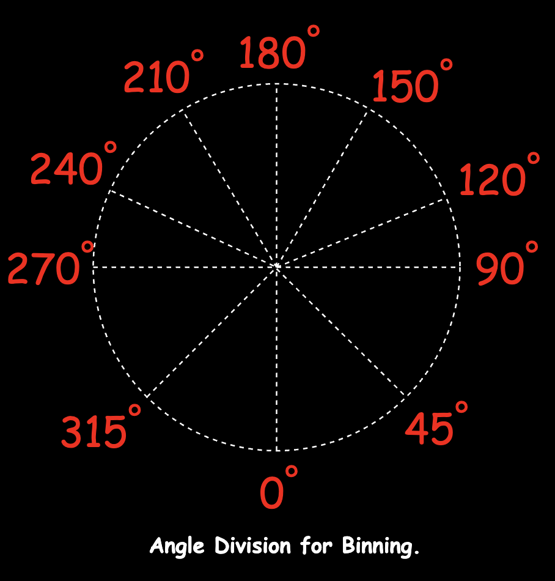
There are 6 bins in the upper half of the space and 5 bins in the lower half. This scheme, I think, favors θ1 more and doesn't give as much attention to θ2 (which is the relative angle with respect to the first rod).
A small but important detail about angle representation
One subtle (but quite important) design choice here is that I'm not directly binning the angle θ. Instead, I'm working with its cosine and sine values.
The main reason for this is to avoid the discontinuity at the wrap-around point. Angles like
θ°and360°represent the exact same physical orientation, but numerically they lie at opposite ends of the range.If I were binning angles directly:
359°would fall into the last bin1°would fall into the first binEven though these two states are almost identical, the model would treat them as completely different. This creates an artificial jump in the state space, which doesn't reflect the actual physics of the system.
By representing the angle as
(cos θ, sin θ), I'm effectively mapping it onto a point on the unit circle instead of a linear scale.What this does in practice is:
- there's no abrupt jump at
θ° / 360°- the representation wraps around smoothly- angles that are close in reality (like
359°and1°) also stay close in representation- the overall state space becomes continuous, which makes learning more stable
So instead of thinking of angle as a line from
θ → 360°, I'm treating it like a circle, which is what it actually is. However, this comes with a trade-off.Since I'm discretizing cosine and sine separately, recovering the final bin index is not straightforward. The approach I took was to find the intersection of the bins obtained from
cosineandsine, and use that as the final position bin.That was the idea, at least.
In practice, during testing, I ran into cases where — due to small numerical errors or noise in observation — the cosine and sine values would land in bins that don't overlap at all. In those cases, there's no valid intersection, and we effectively end up with no bin.
To handle this, I added a fallback: instead of intersection, I take the union of the candidate bins and use their average as an approximation.
It's not perfect, but it works well enough in practice and keeps the system stable.
So yes, this adds a bit of complexity to the implementation — but overall, it gives a much more consistent and physically meaningful representation of angles, which is worth the trade-off here.
That said, this fallback is admittedly a bit of a hack.The main issue is that it doesn't have a strong geometric grounding - averaging bin indices is more of a practical approximation than a principled solution. It works well enough to keep the system stable, but it's not guaranteed to map to the "closest" physical orientation.
A more natural alternative here would be to treat
(cos θ, sin θ)as a point in 2D space and assign bins based on distance on the unit circle. That would preserve the geometry more faithfully and avoid these edge cases altogether.Another option I considered was reconstructing the angle using:
θ = atan2(sin θ, cos θ)and then performing binning directly in angle space. This would eliminate the need for intersection logic entirely, while still preserving continuity at the wrap-around boundary.
I chose not to go that route mainly to stay consistent with the environment's representation and avoid introducing another transformation step into the pipeline.
In hindsight, though, this is probably a cleaner approach — and something I'd revisit in a more refined version of this solution.
For angular velocity, I followed a similar observation: lower velocities require finer binning. At low angular velocities, small changes can significantly affect the system's behavior. In contrast, at high angular velocities, it's much harder to alter the trajectory, so less granularity is sufficient.
Another detail I considered is that there's practically no difference between angular velocities like -0.001 and 0.001. So, I introduced a neutral bin around zero to handle such cases.
Below is the binning scheme for angular velocity for both rods in the system.
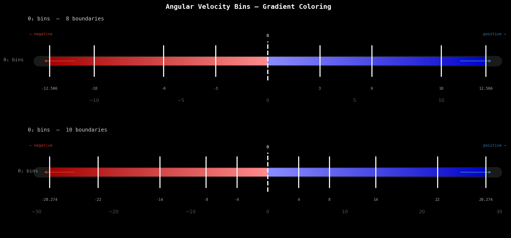
With this setup, we end up with 7 bins for one rod and 9 bins for the other in terms of angular velocity.
So, the total number of states due to my discretization in this problem is: 11 x 11 x 7 x 9 = 7,623 states, and since each state has 3 possible actions, the total number of entries in the Q-table becomes: 11 x 11 x 7 x 9 x 3 = 22,869 state-action values.
This is still orders of magnitude smaller than my initial design, which had around 40 billion state-action values.
This is orders of magnitude smaller than my initial design, which had around 40 billion state-action values. With this revised setup, the experiment becomes tractable, and I can realistically train the model using Q-learning.
Below is my Binning code that we use for the binning of the velocity and position for the 2 rods.
class Binning:
def __init__(self):
# --- Angle discretization (in degrees) ---
angle_boundaries = [0, 45, 90, 120, 150, 180, 210, 240, 270, 315, 360, 0]
# Convert to cosine and sine space
self.cos_bins = [np.cos(math.radians(a)) for a in angle_boundaries]
self.sin_bins = [np.sin(math.radians(a)) for a in angle_boundaries]
# --- Angular velocity configuration ---
theta1_limit = math.pi * 4
theta2_limit = math.pi * 9
self.theta1_velocity_bins = self._generate_velocity_bins(
base=3, increment=1, limit=theta1_limit
)
self.theta2_velocity_bins = self._generate_velocity_bins(
base=4, increment=2, limit=theta2_limit
)
self.velocity_bin_map = {
"theta1": self.theta1_velocity_bins,
"theta2": self.theta2_velocity_bins,
}
# --- Bin counts (edges - 1 = actual bins) ---
self.n_angle_bins = len(self.cos_bins) - 1
self.n_theta1_bins = len(self.theta1_velocity_bins) - 1
self.n_theta2_bins = len(self.theta2_velocity_bins) - 1
def _generate_velocity_bins(self, base: float, increment: float, limit: float) -> List[float]:
"""
Generate symmetric, non-uniform velocity bins around zero.
"""
bins = []
current = base
while current < limit:
bins.extend([current, -current])
current += base
base += increment
bins.extend([limit, -limit])
return sorted(bins)
def _in_bin(self, left: float, right: float, value: float) -> bool:
"""
Check if value lies within a bin interval.
Handles both increasing and decreasing intervals.
"""
if left <= right:
return left <= value < right
return right < value <= left
def _find_bin_indices(self, boundaries: List[float], value: float) -> List[int]:
"""
Return all bin indices where the value fits.
"""
return [
i
for i in range(len(boundaries) - 1)
if self._in_bin(boundaries[i], boundaries[i + 1], value)
]
def position(self, pos: tuple[float, float]) -> int:
"""
Determine position bin using (cos θ, sin θ).
"""
cos_val, sin_val = pos
cos_bins = self._find_bin_indices(self.cos_bins, cos_val)
sin_bins = self._find_bin_indices(self.sin_bins, sin_val)
# Ideal case: intersection exists
common_bins = list(set(cos_bins) & set(sin_bins))
if common_bins:
return common_bins[0]
# Fallback: approximate using union
candidate_bins = set(cos_bins) | set(sin_bins)
if not candidate_bins:
return 0
return math.ceil(math.fsum(candidate_bins) / len(candidate_bins))
def angular_velocity(self, value: float, key: Literal["theta1", "theta2"]) -> int:
"""
Determine angular velocity bin.
"""
bins = self.velocity_bin_map[key]
indices = self._find_bin_indices(bins, value)
if indices:
return indices[0]
# Handle out-of-bound values
if value <= bins[0]:
return 0
return len(bins) - 2
Modified code for better readiblity
Similarly, below is the implementation of the Q-table, along with the update rule and action selection strategy.
The idea here is fairly straightforward: once we have a discretized state space, we can store and update Q-values using a fixed-size table instead of a dynamically growing structure like a dictionary.
class Policy:
def __init__(
self,
action_space: int,
learning_rate: float = 0.1,
discount_factor: float = 0.99,
):
self.action_space = action_space
self.learning_rate = learning_rate
self.discount_factor = discount_factor
# Discretizer
self.binner = Binning()
# --- Q-table initialization ---
# Shape:
# (θ1_pos_bins, θ2_pos_bins, θ1_vel_bins, θ2_vel_bins, actions)
self.q_table = np.zeros(
(
self.binner.n_angle_bins,
self.binner.n_angle_bins,
self.binner.n_theta1_bins,
self.binner.n_theta2_bins,
self.action_space,
),
dtype=np.float32,
)
def discretize_state(
self, state: Tuple[float, float, float, float, float, float]
) -> Tuple[int, int, int, int]:
"""
Convert continuous state into discrete bin indices.
State format:
(cosθ1, sinθ1, cosθ2, sinθ2, θ1_dot, θ2_dot)
"""
theta1_pos = self.binner.position((state[0], state[1]))
theta2_pos = self.binner.position((state[2], state[3]))
theta1_vel = self.binner.angular_velocity(state[4], "theta1")
theta2_vel = self.binner.angular_velocity(state[5], "theta2")
return (theta1_pos, theta2_pos, theta1_vel, theta2_vel)
def update(
self,
state: Tuple[int, int, int, int],
action: int,
reward: float,
next_state: Tuple[int, int, int, int],
) -> float:
"""
Apply the Q-learning update rule:
Q(s, a) ← Q(s, a) + α [r + γ max_a' Q(s', a') - Q(s, a)]
"""
current_q = self.q_table[state][action]
best_next_q = float(self.q_table[next_state].max())
td_target = reward + self.discount_factor * best_next_q
td_error = td_target - float(current_q)
self.q_table[state][action] += self.learning_rate * td_error
return td_error
def epsilon_greedy(self, state: Tuple[int, int, int, int], epsilon: float) -> int:
"""
With probability ε: explore (random action)
With probability 1-ε: exploit (best known action)
"""
if np.random.rand() < epsilon:
return np.random.randint(self.action_space)
return int(np.argmax(self.q_table[state]))
def act(self, observation: Tuple) -> int:
"""
Greedy action selection (used during evaluation).
"""
state = self.discretize_state(observation)
return int(np.argmax(self.q_table[state]))
Modified code for better readiblity
Now that the conceptual implementation is in place and translated into code, I trained the model for 50,000 episodes, with each episode capped at 500 steps (the environment's episode limit).
def training_step(self, max_episode_steps: int) -> None:
"""
Traning code.
"""
pbar = tqdm(
range(self.num_episodes),
desc="training",
unit="ep",
dynamic_ncols=True,
)
for episode in pbar:
obs, _ = self.environment.reset()
episode_reward = 0.0
episode_length = 0
for _ in range(max_episode_steps):
# --- Action selection ---
state = self.policy.discretize_state(obs)
action = self.policy.epsilon_greedy(state, self.epsilon)
# --- Environment step ---
next_obs, reward, terminated, truncated, _ = self.environment.step(action)
# --- Bookkeeping ---
episode_reward += reward
episode_length += 1
# --- Learning update ---
next_state = self.policy.discretize_state(next_obs)
td_error = self.policy.update(
state=state,
action=action,
reward=reward,
next_state=next_state,
)
self.tracer.log_step(td_error)
obs = next_obs
if terminated or truncated:
break
# --- Epsilon decay ---
self.epsilon = max(self.epsilon_end, self.epsilon * self.epsilon_decay)
# --- Episode logging ---
metrics = self.tracer.log_episode(
episode=episode,
reward=episode_reward,
length=episode_length,
epsilon=self.epsilon,
q_table=self.policy.q_table,
policy=self.policy,
)
pbar.set_postfix(metrics)
# --- Snapshot Q-table ---
if (episode + 1) % self.tracer.snapshot_every == 0:
self.tracer.snapshot(self.policy.q_table, episode + 1)
# --- Early stopping ---
if self.tracer.has_converged(threshold=self.early_stop_delta):
self.logger.warning(
"Early stop at ep=%d (convergence Δ < %.1e)",
episode + 1,
self.early_stop_delta,
)
tqdm.write(f"[early stop] converged at episode {episode + 1}")
break
# --- Cleanup ---
self.environment.close()
self._summarise()
Modified code for better readiblity
I’m using an exponential epsilon decay during training:
self.epsilon = max(self.epsilon_end, self.epsilon * self.epsilon_decay)For this run, I used the following hyperparameters:
epsilon_start = 1.0
epsilon_end = 0.05
epsilon_decay = 0.995This means epsilon decays multiplicatively each episode, dropping quickly in the beginning and then slowly tapering off as it approaches the minimum value.
In practice, this results in rapid exploration early on, followed by a fairly quick shift toward exploitation. As seen in the training plots, epsilon reaches its minimum within the first few thousand episodes and stays there for the rest of training.
In hindsight, this decay is quite aggressive. While it helps the agent stabilize faster, it also means the model may stop exploring too early and settle into a suboptimal policy.
This is something I’d likely revisit — either by slowing down the decay or using a schedule that maintains exploration for longer.
Below are some key plots from the training process.
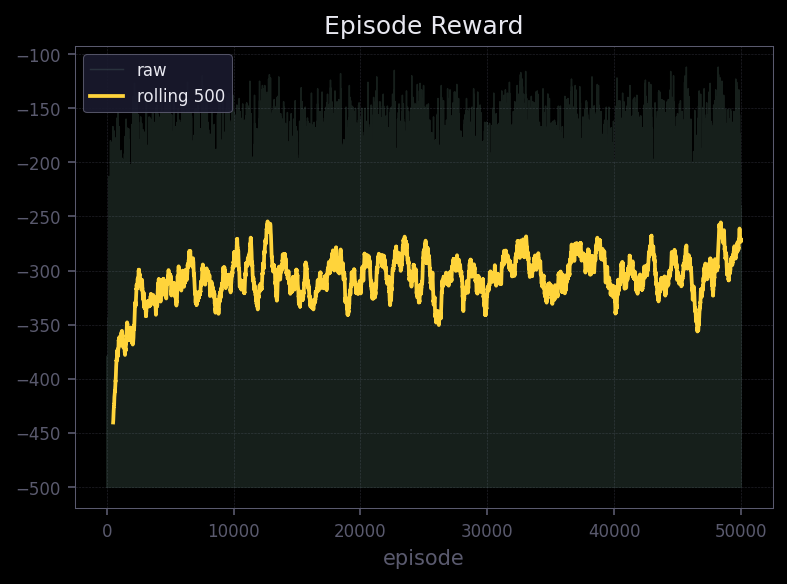
The raw per-episode rewards are extremely noisy, which is expected in reinforcement learning - stochastic exploration naturally produces high variance trajectories.
The rolling average (window = 500) tells a cleaner story: a clear upward trend is visible throughout training.
The agent starts near -450 (essentially failing every episode) and gradually improves toward -270 to -280 by episode 50,000.
Notably, the rolling average has not plateaued - it is still trending upward at the end of training - which suggests the agent hasn't fully converged and would likely benefit from additional episodes.
This overall trajectory indicates the agent is learning progressively better control policies, even if the improvement is slow and noisy.
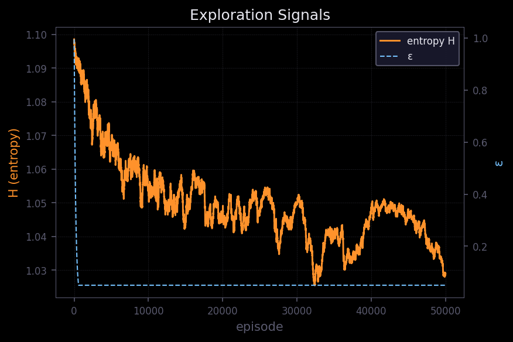
The exploration rate ε decays almost immediately - within the first few thousand episodes it drops to its minimum and remains flat for the rest of training. This is quite aggressive decay; if the environment is complex, this could prematurely lock the agent into a suboptimal policy.
The policy entropy H tells a complementary story and is arguably more informative here. It decreases gradually from ~1.09 → ~1.03 over 50,000 episodes.
Early on → high entropy → more random, exploratory action selection. Later → lower entropy → more confident, deterministic behavior.
It's worth noting that the maximum possible entropy for a 3-action discrete space is log(3) ~ 1.099, which matches the starting value - confirming the agent begins with a near-uniform policy.
The slow, steady entropy decline is a healthy sign: the policy is stabilizing gradually without collapsing prematurely.
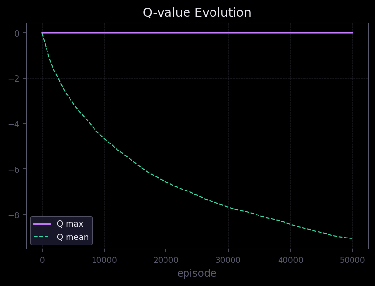
The mean Q-value steadily decreases across all 50,000 episodes, reaching approximately -9 by the end.
This is expected behavior in this environment, where rewards are predominantly negative (step penalties), so learned values naturally drift negative as the agent accumulates more accurate long-horizon estimates.
The agent is effectively learning to minimize cumulative penalties - i.e., reach the goal in fewer steps.
However, the fact that the mean Q-value shows no sign of leveling off is a mild concern. Ideally, Q-values should converge as the policy stabilizes.
The continued decline may indicate the value estimates are still being refined, which is consistent with the reward curve not yet plateauing either.
The max Q-value remaining near zero throughout training suggests:
rewards are sparse or entirely non-positive,
and the agent rarely encounters states associated with strongly positive outcomes.
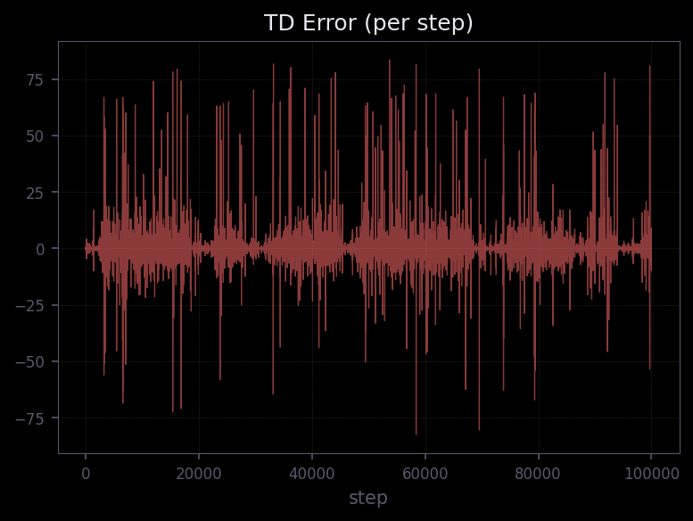
The TD error is highly noisy throughout, which is typical in tabular or semi-gradient Q-learning settings.
Crucially, it remains bounded and centered around zero with no visible upward drift or structural divergence - occasional spikes reach ± 75-85, but these are transient.
This indicates:
stable learning updates across 100,000+ steps,
and no divergence in value estimates - the Bellman updates are well-behaved.
Overall, while the learning is noisy (as expected), the signals collectively indicate that the agent is learning meaningful behavior.
After training, I used the learned policy to evaluate performance on the task. Below are some recorded runs of the Acrobot using the trained Q-learning model.
These are some of the more efficient trajectories, where the agent reaches the goal relatively quickly.
These are cases where the agent struggles - either taking too long or failing to build sufficient momentum.
To better understand the model's overall performance, I ran it for 1 million episodes and analyzed the distribution of steps taken to reach the goal.
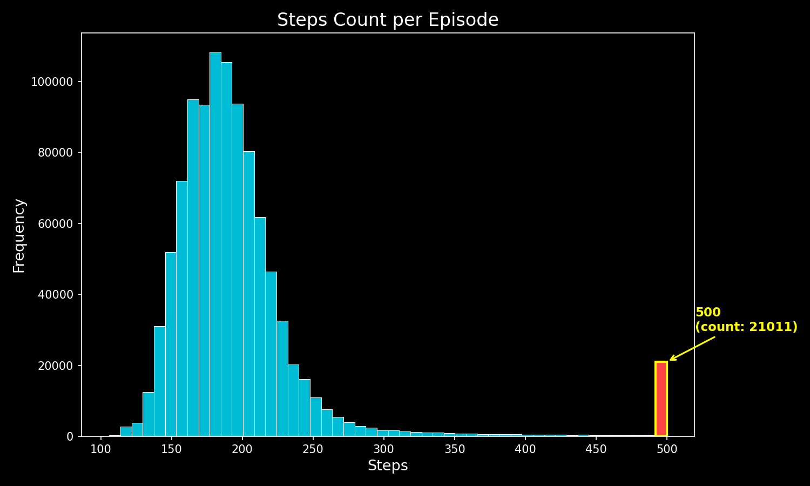
A large portion of episodes cluster in the lower step range, indicating that the agent often reaches the goal efficiently.
However, about 2.1% of episodes hit the maximum limit of 500 steps.
These are failure cases where:
the agent either fails to reach the goal
or reaches it too late (near the step limit)
This suggests that while the policy is generally effective, it is not fully robust.
The model is clearly learning and improving, but it hasn't fully converged to an optimal policy. The presence of both strong runs and clear failures highlights a common trade-off in discretized Q-learning:
Good enough to work - but not perfect due to limited resolution and generalization.
Looking back, what initially felt like a straightforward Q-learning problem turned into a lesson in state representation and practicality.
The biggest mistake I made early on wasn't in the learning algorithm — it was in how I chose to represent the state space. Moving from extremely fine discretization to a more constrained and thoughtful binning made the problem go from completely infeasible to something I could actually train and iterate on.
That shift — thinking less about "maximum precision" and more about where precision actually matters-made all the difference.
At the same time, this setup still has clear limitations:
the learning is noisy
performance is inconsistent in some cases
and the model doesn't generalize particularly well
So while this works, it's not something I'd consider a complete solution.
The next step from here is fairly clear to me:
move beyond hard discretization
reduce reliance on manual binning
and let the model learn a better representation of the state space
As for this solution, it serves as a baseline — a reference point to compare against other approaches I'll explore next for solving the same problem.
P.S. - Update with improvements to the code for better results. Here’s the blog update section documenting the changes and results:
After the initial 50,000-episode run, I revisited the code with three goals:
faster learning,
better final performance, and
fewer failure cases.
Below, I document each change, the reasoning behind it, and what the updated training curves reveal.
atan2 and np.digitizeInitially, I discretized angles by binning
cos θandsin θseparately, and then finding the intersection of the resulting bins. This required additional fallback logic (union averaging) whenever numerical noise caused the intersection to be empty.
I had previously mentioned the idea of using atan2(sin θ, cos θ), which completely removes the need for intersection logic. Following that approach, I now recover the angle directly using:
$$ \theta = \operatorname{atan2}(\sin \theta,\ \cos \theta) $$
and then discretize it using np.digitize with uniformly spaced edges over [-π, π]. This is the exact approach I had noted earlier as “something I’d revisit” — and in practice, it turns out to be significantly cleaner and more robust.
# Before: complex intersection logic
cos_bins = self._find_bin_indices(self.cos_bins, cos_val)
sin_bins = self._find_bin_indices(self.sin_bins, sin_val)
common = set(cos_bins) & set(sin_bins)
# ... fallback to union average if empty
# After: direct and robust
theta1 = np.arctan2(sin1, cos1)
t1 = int(np.clip(np.digitize(theta1, self.angle_edges) - 1, 0, self.n_angle_bins - 1))
In addition to simplifying the logic, I also increased the discretization resolution:
Angle bins: 11 → 20
Velocity bins: 7/9 (non-uniform) → 20 uniform bins each
This increases the Q-table size from:
11 × 11 × 7 × 9 × 3 = 22,869
to:
20 × 20 × 20 × 20 × 3 = 480,000
This is still very manageable in memory, while providing much finer coverage of the state space.
The earlier non-uniform velocity binning (finer near zero, coarser at extremes) was a reasonable heuristic. However, using uniform bins with a higher count achieves a similar effective resolution without the need for manual tuning.
Here’s a refined version that keeps your tone while tightening the language and sharpening the technical explanation:
Earlier, the Q-table was initialized to all zeros (
np.zeros).
Now, I initialize every entry to 5.0 using np.full(..., fill_value=5.0).
The intuition is straightforward: if the agent starts by assuming that every unexplored state-action pair has a value of 5.0-while the true returns are mostly negative due to step penalties-then each new experience will tend to lower that estimate. This creates a natural pressure for the agent to try all actions at least once in a given state before the Q-values begin to stabilize.
In effect, this acts as a form of systematic exploration, complementing ε-greedy rather than relying on it entirely.
# Before
self.q_table = np.zeros((...), dtype=np.float32)
# After
self.q_table = np.full((...), fill_value=5.0, dtype=np.float32)
This technique- optimistic initialization is well known and particularly effective in sparse- or negative-reward environments like Acrobot, where the agent might otherwise spend many episodes without discovering useful behavior.
This is the most impactful change. The original setup used the raw environment reward (-1 per step, 0 at termination), which provides almost no learning signal. The agent only learns that shorter episodes are better, but gets no guidance on how to reach the goal.
To address this, I introduced potential-based reward shaping using the tip height of the Acrobot:
$$ \phi(s) = -\cos(\theta_1) - \cos(\theta_1 + \theta_2) $$
This is exactly the same quantity the environment uses to determine goal completion (goal condition: $\phi(s) > 1$). The shaping reward is defined using the standard potential-based form:
$$ F(s, s') = \gamma \cdot \phi(s') - \phi(s) $$
This formulation is important because it is guaranteed to preserve the optimal policy (Ng et al., 1999), while providing the agent with a dense and meaningful learning signal. In practice, this means the agent is immediately rewarded for swinging higher, even if it hasn’t yet reached the goal.
On top of that, I added a +100 bonus when the episode terminates successfully. This helps reinforce successful trajectories more strongly and speeds up convergence.
@staticmethod
def _shape_reward(obs, next_obs, raw_reward, terminated):
gamma = 0.99
phi_s = _tip_height(obs)
phi_sp = _tip_height(next_obs)
shaping = gamma * phi_sp - phi_s
bonus = 100.0 if terminated else 0.0
return raw_reward + shaping + bonus
One important detail: the original (unshaped) reward is still used for logging. This ensures that all training curves remain directly comparable to the baseline, making it easier to evaluate the actual impact of shaping.
In the earlier run, the learning rate was fixed at
α = 0.1throughout training.
Instead of keeping the learning rate static, I switched to a decaying schedule. Training now starts at α = 0.15 and gradually decays per episode down to a minimum of 0.01:
python id="w6s2j1"
current_lr = max(self.lr_min, current_lr * self.lr_decay) # lr_decay = 0.99998
The intuition here is fairly straightforward:
A higher α early on allows the agent to incorporate new information aggressively during exploration.
A lower α later helps stabilize learning and prevents oscillations once the policy starts to converge.
This gives a better balance between fast learning initially and stable refinement toward the end.
| Parameter | Before | After | Rationale |
|---|---|---|---|
| Episodes | 50,000 | 80,000 | Increased training budget |
| ε start | 1.0 | 1.0 | Unchanged |
| ε end | 0.05 | 0.01 | Greedier final policy |
| ε decay | 0.995 | 0.9997 | Much slower — longer exploration |
| Learning rate | 0.1 | 0.15 → 0.01 | Higher start with decay |
| Bins (angle) | 11 | 20 | Finer resolution |
| Bins (vel1) | 7 | 20 | Finer + uniform |
| Bins (vel2) | 9 | 20 | Finer + uniform |
The ε decay is the most notable change here. With 0.995, epsilon reached its minimum within ~5,000 episodes. With 0.9997, it now takes roughly 15,000–20,000 episodes to decay.
This gives the agent significantly more time to explore, which works especially well in combination with the improved reward signal and optimistic initialization.
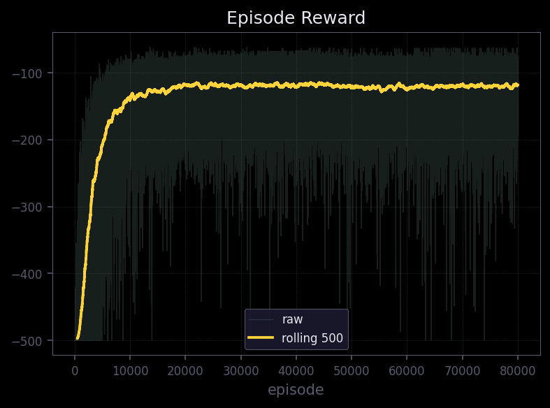
The rolling-500 average now reaches approximately -100 to -110, compared to -270 to -280 in the baseline. This is a dramatic improvement - the agent is solving episodes in roughly 100 steps on average, versus ~280 before.
The reward curve also plateaus clearly around episode 15,000–20,000, unlike the baseline where it was still trending upward (oscillating alot) at episode 50,000. This indicates the agent has converged to a near-stable policy much earlier, and the additional episodes serve mainly for refinement.
The raw per-episode variance is still high (spanning -500 to near 0), which is inherent to the stochastic environment and ε-greedy exploration.
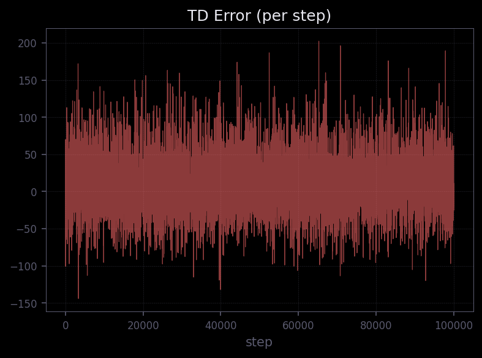
The TD errors are significantly larger than before — ranging from ±150 to ±200 compared to ±75–85 in the baseline. This is a direct consequence of the reward shaping: the +100 termination bonus creates large TD surprises whenever the agent reaches the goal, and the potential-based shaping adds variance to every step's reward.
This is expected and not a concern — the errors remain bounded and symmetric around zero with no visible drift, indicating stable learning despite the higher magnitude.
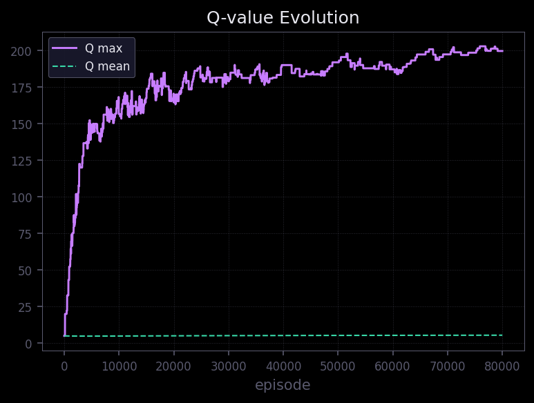
Q max grows steadily to ~200, driven by the +100 success bonus propagating backward through the Q-table. Q mean stays relatively flat around 5 (near the optimistic initialization value), which makes sense: most states are visited infrequently enough that their Q-values haven't moved far from the initial 5.0.
This is in stark contrast to the baseline, where Q mean drifted to -9 and Q max stayed near 0. The positive Q-values here reflect the shaped reward signal — states near the goal now have genuinely high estimated returns.
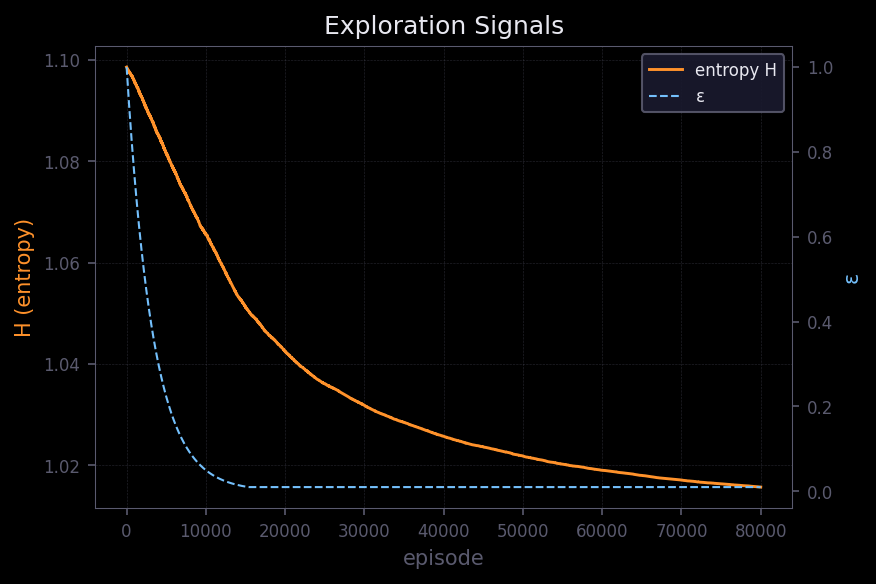
Epsilon decays more gradually, reaching its minimum around episode 15,000–20,000 (vs ~5,000 before). Policy entropy drops from 1.10 to ~1.015, showing the policy becomes highly deterministic by the end.
The slower epsilon decay means the agent had roughly 3–4x more exploratory episodes before committing to its policy, which — combined with optimistic initialization — results in much better state-space coverage.
I ran a 1,000-episode inference sweep using the trained model and recorded the trajectories for analysis.
These are some of the best-performing trajectories sampled from the trained policy.
These represent some of the less efficient trajectories, where the agent takes longer to reach the goal.
Even in the worst cases, the model still manages to reach the goal, although with a higher step count.
One clear improvement over the baseline is in recovery behavior. In the earlier model, the agent would often get stuck in inefficient loops—swinging back and forth without building enough momentum (or going in circles). In contrast, the updated model is much better at escaping these dead-end dynamics and eventually recovering a trajectory that leads to the goal.
This kind of behavior was rarely observed in the baseline, and it highlights a key improvement: the policy is not just more efficient on average, but also more robust under suboptimal states.
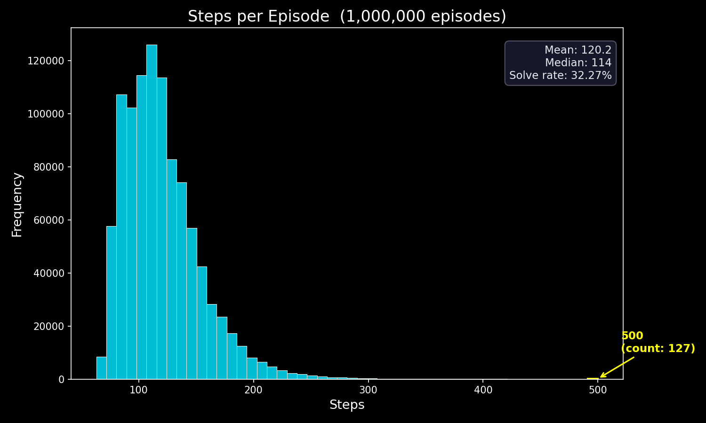
Compared to the baseline, where 2.1% of episodes hit the 500-step limit, the improved model shows a much tighter distribution, with this failure rate reduced to just 0.0127%. The vast majority of episodes now cluster in the 70–150 step range, which aligns well with the rolling average reward of ~-105. The long tail toward 500 steps is significantly thinner, indicating far fewer outright failures.
This suggests that the combination of reward shaping, finer discretization, and optimistic initialization has not only improved the average performance but also made the policy substantially more reliable in worst-case scenarios.
In this experiment, the mean episode length is 120.2, and the most frequent step count is 114. The logged solve rate is 32.27%, which represents the percentage of episodes where the goal was achieved within 100 steps.
| Metric | Baseline (50k ep) | Improved (80k ep) |
|---|---|---|
| Rolling avg reward | ~-275 | ~-105 |
| Convergence | Not converged | Converged by ~20k |
| Q-table size | 22,869 | 480,000 |
| Discretization | cos/sin intersection + fallback | atan2 + np.digitize |
| Reward signal | Raw (-1/step) | Shaped (tip height + bonus) |
| Q-init | Zeros | Optimistic (5.0) |
The single biggest contributor to improvement is reward shaping - giving the agent a continuous signal based on tip height completely changes the learning dynamics. The other changes (finer bins, optimistic init, slower ε decay, LR decay) each contribute incrementally but are most effective in combination.
The trade-off is a larger Q-table (480k vs 23k entries) and slightly more complex reward logic. But the table is still tiny by modern standards, and the shaping function is a simple closed-form expression.